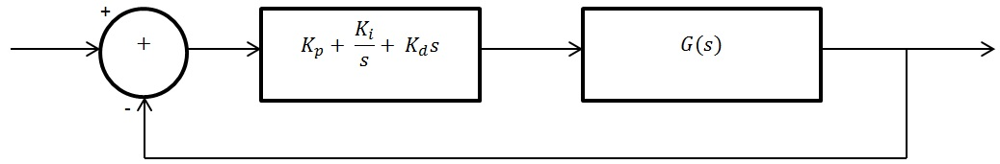

PID controllers
Enter the coefficients of the
transfer function of the plant
. E.g.: s + 4 = 1,4
Numerator:
(def. = 1)
Denominator:
(def. = 1)
Enter the
PID constants
: C(s) = K
p
+
K
i
/
s
+ K
d
s
K
p
:
(def. = 1)
K
i
:
(def. = 0)
K
d
:
(def. = 0)
Transfer function PID controller:
C(s) =
1
/
1
Transfer function plant:
G(s) =
1
/
1

Transfer function closed-loop system:
P(s) =
G(s)C(s)
/
1 + G(s)C(s)
=
1
/
2
Pole-zero map closed-loop system:
Step response:
Rise time:
Final value:
Settling time: